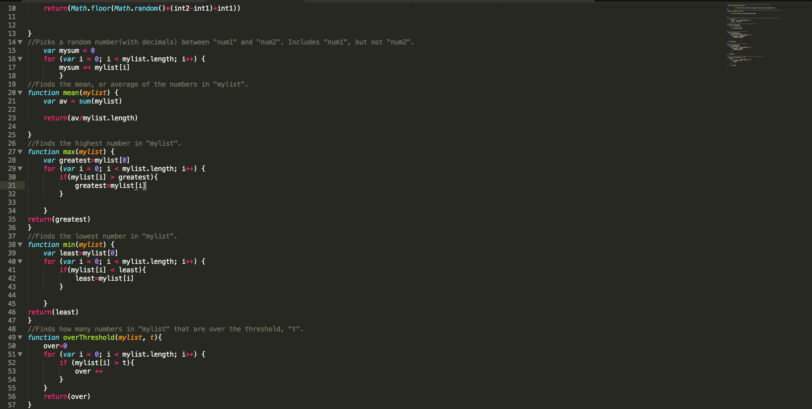

Useful Functions JS is a downloadable library with a few useful functions. I use them a lot, and I thought it would be great to make the whole world have access to them.
Download Here!
Note: This download is not supported in Edge version 12, IE, Safari or Opera version 12 (and earlier).
If you are using one of the browsers, please download Google Chrome or Firefox, or an updated
version of Edge or IE

Just a small snipet of code from Useful Functions JS holds so many valuable functions.
Function 1: euclidean
This is a function that uses Euclides' formula to find the distance between two points on a two dimensional plane. The formula is: √ |x1-x2|²+|y1-y2|². The square root covers everything. X1 and y1 are the x and y positions of the first point (x1, y1) and x2 and y2 are the x and y positions of the second point (x2,y2). For example, euclidean(1,1,5,4) would compute to 5.
Here is the code:
function euclidean(x1,y1,x2,y2) {
return(Math.sqrt(Math.pow((Math.abs(x1-x2)),2)+Math.pow((Math.abs(y1-y2)),2)));
Functions 2 and 3: randInt and randNum
These two functions are very simaler. The first one, randInt, returns a random integer between the first argument and the second argument. The other one, randNum, returns a random number between the first argument and the second argument. They inculde the first argument, but not the second. The difference is the second one may have a decimal, but the first one cannot. For example, if you did randInt(3,5), it would output 3, 4, or 5. If you did randNum(3,5), it may output something like 3.4489780582942267.
Here is the code, starting with randInt and then randNum:
function randInt(int1, int2) {
return(Math.floor(Math.random()*(int2-int1)+int1));
}
function randNum(num1, num2) {
return(Math.random()*(num2-num1)+num1);
}
Function 4: sum
This function is very simple. All it does is return the sum of all numbers in a list given to it. For example, if you did sum([1,2,3]), it would return 6.
Here is the code:
function sum(mylist) {
var mysum = 0;
for (var i = 0; i < mylist.length; i++) {
mysum += mylist[i];
}
return (mysum);
}
Function 5: mean
This function is also simple. It finds the average, or mean, of a list of numbers by adding them up (using the sum function) and then dividing by the number of numbers.
Here is the code:
function mean(mylist) {
var av = sum(mylist);
return(av/mylist.length);
}
Functions 6 and 7: max and min
These functions are simaler, yet opposites. Max returns the highest number in a list, while min returns the lowest. So, if you did max([3,4,5]), you would get 5, but if you did min([3,4,5]), you would get 3.
Here is the code, starting with max, then min:
function max(mylist) {
var greatest=mylist[0];
for (var i = 0; i < mylist.length; i++) {
if(mylist[i] > greatest){
greatest=mylist[i];
}
}
return(greatest)
function min(mylist) {
var least=mylist[0];
for (var i = 0; i < mylist.length; i++) {
if(mylist[i] < least){
least=mylist[i];
}
}
return(least)
}
Function 8: overThreshold
This functions returns how many numbers are over a threahold, t. For example, if you did overThreshold([5,6,7,8,9], 6), you would get 3 because only 7, 8 and 9 are greater than 6. If you would like to have the amount of numbers under a threshold, you can do 5 - overThreshold([5,6,7,8,9], 6). You would do 5 because that is how many numbers there are.
Here is the code:
function overThreshold(mylist, t){
var over=0;
for (var i = 0; i < mylist.length; i++) {
if (mylist[i] > t){
over ++;
}
}
return(over)
}
Once downloading, you can very easily apply useful functions js to your HTML script (it is okay to have other languages with HTML, but this needs to be in the HTML part) by simply doing the following. Step 1: move useful functions js to the same folder as the project you want to use it in. Step 2: in the HTML section, in a script tag, type this: src="file name goes here". Note: do not type it in the middle of the script and the /script, write it in the first script, before the >. Step 3: use the functions like you normally would.